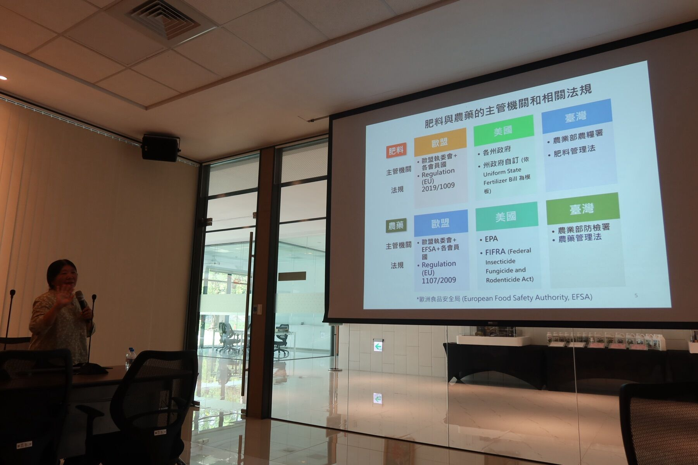
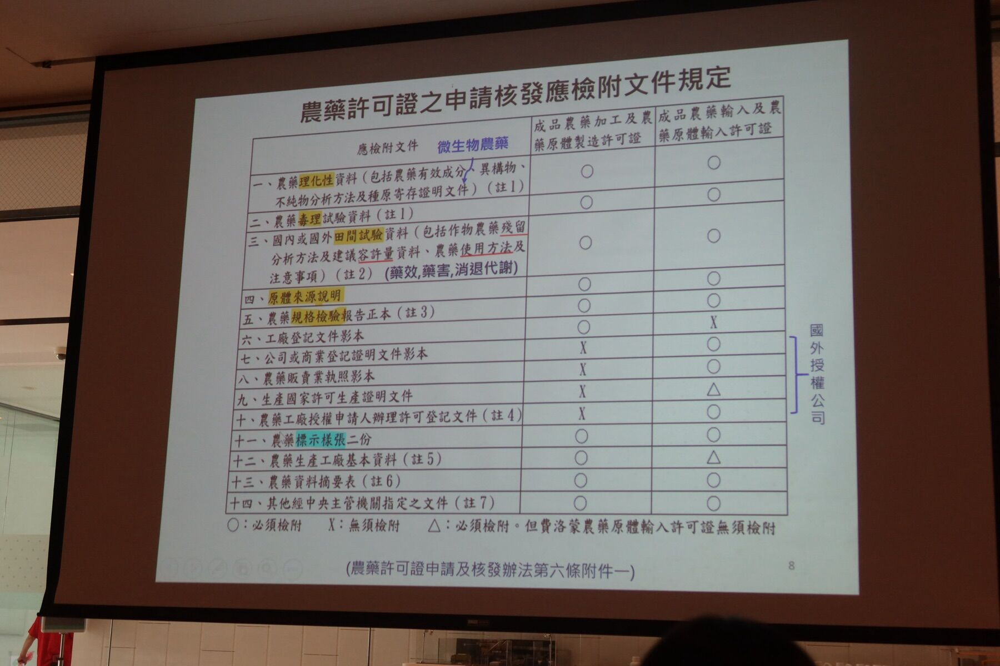
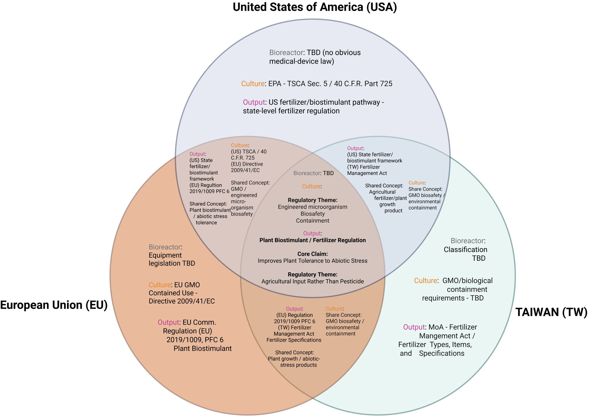
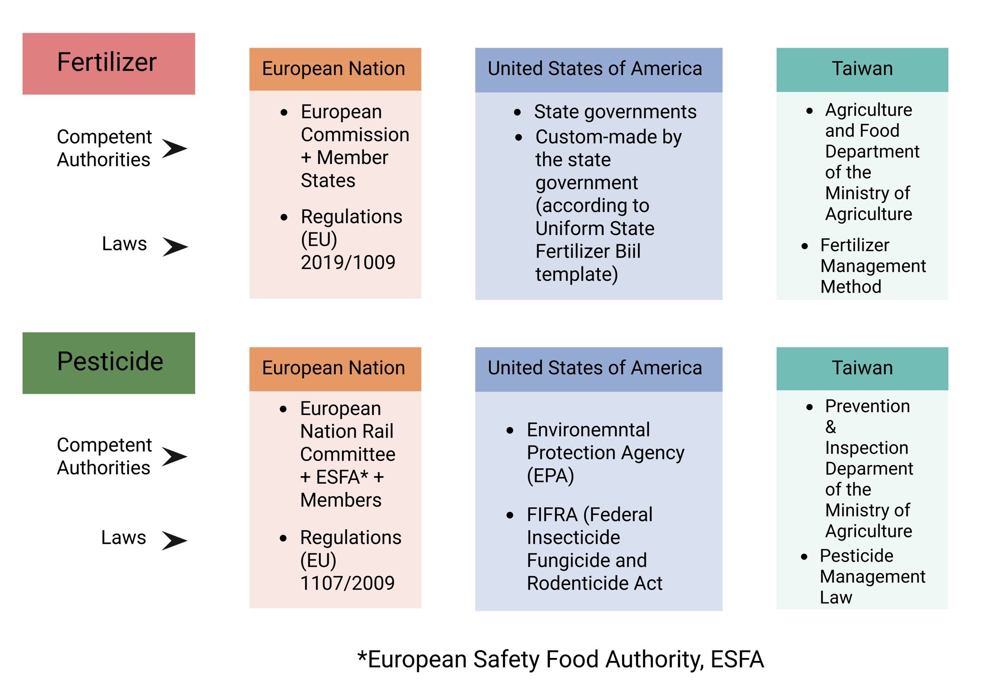
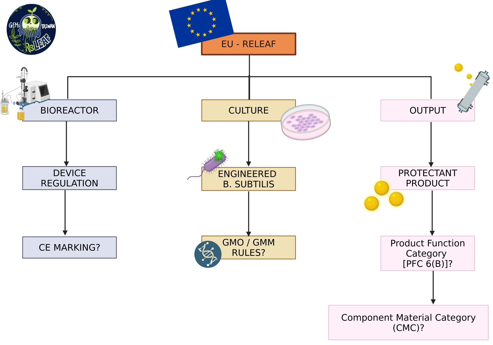
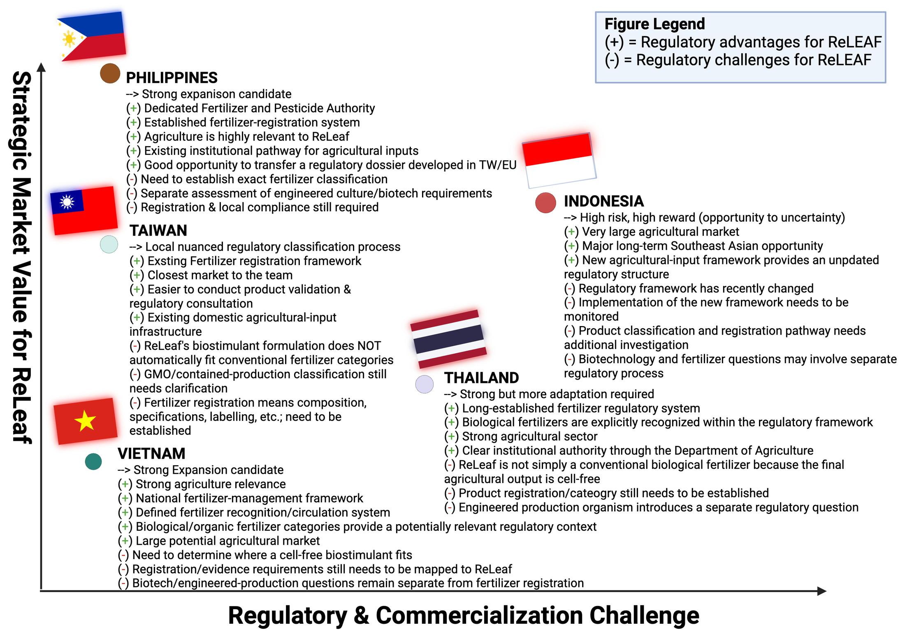
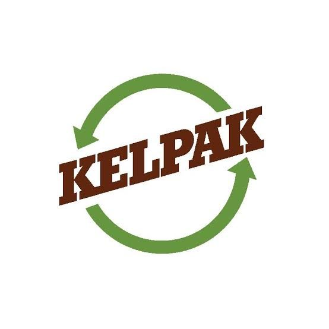

Introduction
For ReLeaf, developing a functional biological solution is only the first step toward real-world impact. A product that works in the laboratory may still face substantial regulatory barriers before it can be manufactured, marketed, and used by farmers. These requirements also differ significantly between countries: the same biological product may be regulated as a biostimulant, fertilizer, or pesticide depending on its intended use, composition, and claims. This is why ReLeaf examined commercialization and regulatory requirements alongside our scientific development. Rather than treating regulation as a final step after the product has been designed, we used regulatory research to ask an earlier question: “What would ReLeaf need to become in order to reach farmers legally and practically?”
This approach is particularly important because agricultural biotechnology products operate at the intersection of several regulatory systems. Requirements governing agricultural inputs, product claims, environmental use, and market access can determine not only whether ReLeaf can be commercialized, but also which markets should be prioritized. Hence, our research showed us that ‘geography governs the rules.’ A regulatory strategy that works in Taiwan does not automatically transfer to the United States or European Union. Therefore, we analyzed ReLeaf separately across three target markets: Taiwan, the United States, and the European Union.
Most importantly, our regulatory research led to three conclusions. First, regulation must be treated as part of product design: ReLeaf's formulation, intended claims and market determine the pathway it must follow. Second, separating the engineered Bacillus subtilis production culture from the cell-free agricultural output is central to commercialization, because the three components can be subject to different regulatory requirements. Third, ReLeaf should remain focused on abiotic-stress resilience and evaluate fertilizer or plant-biostimulant pathways rather than pesticidal claims; within the markets we studied, the EU currently provides the clearest international pathway for further investigation because its PFC 6(B) framework explicitly includes non-microbial plant biostimulants and abiotic-stress tolerance. These conclusions shaped both our product design and our market-entry strategy.
| Takeaway | Why |
|---|---|
| I. Regulation shapes design | ReLeaf cannot be designed first and regulated later. Formulation, intended function, and claims influence the regulatory pathway |
| II. Separate the system | The bioreactor, the engineered B. subtilis, and the cell-free protectant are separate regulatory questions. Containment is therefore part of commercialization |
| III. Claims shape markets | ReLeaf is being developed around abiotic-stress resilience rather than pest control. This makes fertilizer/biostimulant pathways the main strategy, with the EU as our current first international market to investigate. |
Regulation is therefore not the final checkpoint of ReLeaf; it is one of the constraints that shape what we build, what we claim, and where we sell it.


How we analyzed ReLeaf's regulatory pathway
Our regulatory analysis followed a product-based approach rather than treating ReLeaf as a single regulatory object. We separated the system into three interconnected components: the bioreactor, the engineered production culture, and the cell-free agricultural output. Each component may be subject to different regulatory requirements, so establishing one legal classification for the entire ReLeaf system would be insufficient.
For the agricultural output, we then followed a second pathway:
function → claim → regulatory classification → requirements → market access
First, we identified the biological function that ReLeaf is designed to provide. We then considered how that function would be expressed as a commercial claim, because the intended use and claims of an agricultural product can affect its regulatory classification. Finally, we examined the requirements associated with the potential classification in each target market.
This framework allowed us to distinguish between what ReLeaf does scientifically, what ReLeaf claims commercially, and how a regulator may classify the final product legally. It also prevented us from assuming that the regulatory status of the engineered production system is automatically the same as the regulatory status of the cell-free agricultural output.
Geography governs the rules
Fertilizer, pesticide, or biostimulant?
One of the first regulatory questions we encountered was deceptively simple: what kind of agricultural product is ReLeaf?


Fertilizers, plant biostimulants, and pesticides can all be used to improve agricultural productivity, but they are not interchangeable regulatory categories. Fertilizers are traditionally associated with supplying nutrients, while plant biostimulants are generally concerned with improving plant processes or characteristics. Pesticide regulation, in contrast, is associated with products intended to control regulated pests or other harmful organisms. For ReLeaf, this distinction matters because our intended application is centered on abiotic stress resilience. BoPEP4 and ACCD are being investigated in relation to salinity stress, while AtLEA14 is being investigated in relation to drought stress. Our objective is therefore not to develop a pesticide that directly controls a pathogen or pest, but to help plants better tolerate unfavorable environmental conditions. This gives the fertilizer/biostimulant pathway a stronger conceptual fit with our current project. However, this positioning must still be evaluated separately in each jurisdiction because countries define and regulate these categories differently.
For this analysis, we use three broad functional concepts to distinguish agricultural inputs. Fertilizers primarily provide plant nutrients; plant biostimulants stimulate plant or rhizosphere processes to improve characteristics such as nutrient-use efficiency or abiotic-stress tolerance; and pesticides or plant-protection products are generally directed toward the control of regulated pests or harmful organisms. These concepts are useful for comparing regulatory systems, but they should not be treated as universally identical legal categories. The two regulatory documents we reviewed emphasize that different jurisdictions may classify functionally similar products differently.
The EU definition as a reference point
The EU framework provides a useful reference point for understanding why ReLeaf's intended function is relevant to plant biostimulant regulation. Under Regulation (EU) 2019/1009, a plant biostimulant is an EU fertilising product intended to stimulate plant nutrition processes independently of its nutrient content, with the sole aim of improving one or more of four characteristics: nutrient-use efficiency, tolerance to abiotic stress, quality traits, or the availability of confined nutrients in the soil or rhizosphere.
Of these functions, abiotic-stress tolerance is the most directly relevant to ReLeaf. Our current biostimulants are being investigated for plant responses to salinity and drought stress. This does not by itself establish that ReLeaf qualifies as a PFC 6(B) product, because the final product must also satisfy the applicable component, composition, safety, labeling, efficacy (how well a product achieves the effect it is intended to produce) and conformity requirements. However, the EU definition provides a clear regulatory concept that is aligned with the intended function of ReLeaf.
The importance of a product claim
Classification depends on the product's composition, intended function and claims. The same type of biological material can be treated differently depending on how it is formulated, what it is intended to do and how those effects are described.
ReLeaf therefore intends to keep its commercial claims within abiotic-stress resilience, rather than claims to control pests, pathogens or plant diseases. The current scientific literature supporting our selected biostimulant concerns salinity-related stress: BoPep4 has been shown to improve salinity tolerance in broccoli, while AtLEA14 has been shown to enhance salt-stress tolerance in Arabidopsis. ACC deaminase is being investigated for its role in reducing stress associated with ethylene physiology under salinity.
These scientific findings describe the biological rationale for our experiments; they do not establish a regulatory classification. Final commercial claims will be limited to effects demonstrated by ReLeaf's own efficacy data and accepted by the relevant authority.
Taiwan: a clear distinction between regulatory pathways

Taiwan was particularly important to our analysis because its agricultural regulatory framework distinguishes between fertilizer and pesticide pathways. Under Taiwan's Pesticide Management Act, the definition of pesticide can extend beyond conventional pest-killing substances and include certain preparations that regulate crop growth or physiological processes. This means that simply describing a product as a biological plant biostimulant does not determine its legal classification. Its actual function, formulation, and claims must also be considered.
For ReLeaf, this creates an important strategic consideration. Because our current biostimulants are intended to improve plant tolerance to drought and salinity rather than directly control pests, we see a fertilizer-oriented pathway as potentially more appropriate than positioning the product as a pesticide. ACCD demonstrates why this distinction requires careful consideration. Although ACCD has a specific biochemical function involving ethylene-related plant physiology, its mechanism alone does not determine whether the final agricultural product would legally be treated as a fertilizer, biostimulant, or pesticide. The claims made about the finished product and the way it is presented to users would also matter. Consequently, our goal is not simply to find a regulatory category that can technically contain ReLeaf. We want to develop a product whose intended function, scientific evidence, and regulatory positioning are consistent with one another.
Taiwan market: regulatory pathway for ReLeaf biostimulants
Fertilizer Management Act: fertilizer classification
The first regulatory pathway we evaluated for ReLeaf's biostimulants is Taiwan's Fertilizer Management Act. The Act defines fertilizer as a product that supplies nutrients to plants or promotes nutrient utilization, and Article 5 requires a fertilizer to obtain a fertilizer registration certificate before it can be manufactured, imported, or sold. This creates an important classification question for ReLeaf: our biostimulants are not primarily intended to provide nutrients, but rather to improve plant tolerance to abiotic stress. Therefore, ReLeaf cannot simply assume that BoPEP4, AtLEA14, or ACCD automatically qualify as fertilizers. Instead, we would need to establish that the final formulated product fits an applicable fertilizer category and specification recognized by Taiwan's Ministry of Agriculture.
Taiwan's published fertilizer classification system includes Plant Growth Auxiliary Materials (植物生長輔助劑類) as one of its nine fertilizer categories, alongside nutrient, organic, and microbial fertilizer categories. The applicable specifications define the permitted scope, principal components, harmful-substance limits, restrictions, and testing requirements for each category. This provides a potential regulatory route for ReLeaf's abiotic-stress biostimulants, but the exact fit of protein/peptide-based biostimulants must be confirmed with the competent authority based on their final formulation and claimed function. Our strategy is therefore to formulate the cell-free output as a defined agricultural input, characterize its composition and safety, demonstrate its efficacy against the intended abiotic stress, and apply for the appropriate fertilizer registration if MOA confirms that classification.
Fertilizer registration and product standards
If ReLeaf's biostimulants are accepted under a fertilizer category, registration becomes a prerequisite for commercialization. Article 5 of the Fertilizer Management Act prohibits the manufacture, import, or sale of fertilizer without a registration certificate, while Article 7 requires the registration certificate to specify information including the fertilizer category, registered ingredients, physical characteristics, packaging quantity, manufacturer, and manufacturing facility. ReLeaf would therefore need to define the composition and concentration of each commercial biostimulant rather than treating the output as an undefined biological secretion.
Our proposed pathway addresses this requirement by separating the engineered production system from the cell-free agricultural output. The bioreactor produces the selected biostimulant under controlled conditions, while the commercial agricultural input would be characterized and standardized before application. For BoPEP4, AtLEA14, and ACCD, this means establishing identity, concentration, purity, stability, and efficacy specifications appropriate to the final formulation. We would then use these data to support the applicable registration application and ensure that the commercial product consistently matches its registered composition.
Fertilizer labeling and advertising requirements
Taiwan also regulates how registered fertilizers are presented to users. Article 19 of the Fertilizer Management Act requires fertilizer advertisements to state the fertilizer registration number, fertilizer category, and registered ingredients, while prohibiting false, exaggerated, or otherwise improper advertising. Article 20 further prohibits an unqualified product from being labeled, advertised, or promoted as having fertilizer effects when it does not satisfy the applicable fertilizer specifications.
ReLeaf therefore needs to ensure that its commercial claims remain consistent with the product's regulatory classification. Rather than making broad claims such as “protects crops from all stress” or “replaces pesticides,” our initial Taiwan positioning would focus on the experimentally supported functions of the individual biostimulants: BoPEP4 and ACCD for salinity stress and AtLEA14 for drought stress. Claims would be based on validated efficacy data and limited to the functions accepted by the relevant registration. This approach reduces the risk that marketing claims themselves trigger a different regulatory classification.
Pesticide Management Act: avoiding an unintended pesticide classification
A second major regulatory barrier is Taiwan's Pesticide Management Act. Article 5 defines finished pesticides broadly to include products used to control harmful organisms as well as products used to regulate crop growth or affect plant physiological functions. This is particularly important for ReLeaf because our biostimulants intentionally affect plant stress responses. If the final product or its claims are interpreted as falling within the pesticide definition, the product could require pesticide registration rather than following the fertilizer pathway.
ReLeaf's strategy is therefore to maintain a clear distinction between abiotic-stress protection and pesticidal claims. The initial products will not be marketed as products that kill, control, or prevent pathogens, insects, or other harmful organisms. Instead, BoPEP4 and ACCD will be positioned around salinity-stress tolerance, while AtLEA14 will be positioned around drought-stress tolerance. This does not guarantee that the products will legally qualify as fertilizers (the final classification remains an authority determination), but it provides a more defensible basis for pursuing the fertilizer/plant-growth-input pathway rather than intentionally making pesticidal claims.
If the Ministry of Agriculture (MoA) determines that a particular biostimulant is instead a pesticide, Article 9 requires approval and registration before manufacture, processing, or import, and Article 10 requires supporting information including specifications, physicochemical and toxicological data, field-trial data, and other required documentation. Therefore, avoiding unnecessary pesticide claims is an important part of ReLeaf's commercialization strategy.
Genetically engineered production strain and containment
The engineered B. subtilis production strain is a separate regulatory question from the cell-free biostimulant. In our commercial model, the farmer receives the bioreactor and the engineered culture as a contained production system; the microorganism is not intentionally released into the field. The cell-free output is physically separated from the production culture before agricultural use. Taiwan does not currently provide, in the agricultural regulations we identified, a single general contained-use GMO statute specifically governing an engineered bacterial production chassis of this type. The Ministry of Agriculture has specific rules for transgenic plants, while genetically modified microorganisms are also addressed in sector-specific rules such as the Feed Control Act when they are used as feed or feed additives. Those frameworks do not directly describe ReLeaf's contained B. subtilis production system.
We therefore treat the Taiwan regulatory status of the production strain as unconfirmed, rather than assigning it to a rule that does not clearly apply. Before commercial manufacture, ReLeaf would seek a written determination or regulatory consultation with the relevant authority covering the engineered microorganism, contained production, transport of the culture and waste handling. Containment remains an engineering and risk-management requirement regardless of the final legal classification. The culture will be retained within the bioreactor, while the agricultural output is cell-free. See Safety for the containment design.
Organic agriculture: a market we would not target initially
ReLeaf's current commercialization strategy should also distinguish conventional agricultural-input markets from certified organic agriculture. Taiwan's Organic Agriculture Promotion Act defines organic agriculture in a way that excludes the use of genetically modified organisms and their products, and Taiwan's organic production standards prohibit the use of genetically modified biological preparations and materials. Because ReLeaf relies on an engineered microorganism as its production platform, we should not initially position the system as an input for certified organic production without first obtaining a specific regulatory determination that the final cell-free output is permitted.
This does not prevent ReLeaf from pursuing its broader sustainability objective. Instead, the initial Taiwan market should focus on conventional agriculture and sustainable-input applications, where the value proposition is reducing chemical inputs and improving crop resilience without releasing the engineered production organism into the field.
Taiwan regulatory evaluation
Overall, Taiwan provides a potentially accessible development and commercialization market because ReLeaf is being developed locally and can be evaluated directly against Taiwan's agricultural-input framework. However, the principal regulatory challenge is product classification. The Fertilizer Management Act provides a possible pathway through fertilizer and plant-growth-assistance categories, but ReLeaf must demonstrate that its final biostimulant formulation fits an applicable category and specification. At the same time, the Pesticide Management Act creates a significant boundary around claims concerning plant physiology and pest control.
Our current strategy is therefore to pursue a non-pesticidal, abiotic-stress positioning, maintain strict containment of the engineered B. subtilis production strain, standardize the cell-free outputs, and obtain formal confirmation of the appropriate fertilizer classification before commercial sale. Taiwan will remain an important validation and early-development market, while the EU is currently prioritized as ReLeaf's first international commercialization market because the EU's Product Function Category (PFC) 6(B) framework more directly aligns with our abiotic-stress plant-biostimulant strategy.
Bioreactor and equipment
The ReLeaf bioreactor is a piece of equipment separate from the agricultural input produced by the system. Its regulatory requirements therefore depend on the final hardware design, including electrical equipment, pressure-bearing components, pumps, sensors and other safety-critical components.
At the current prototype stage, we have not established a single Taiwan product-safety classification for the complete custom bioreactor. The final commercial design would need to be assessed against the applicable Taiwan standards and conformity requirements for its individual components and configuration. This assessment should be completed with the Hardware team before commercial manufacture.
The bioreactor's equipment compliance should not be confused with the agricultural registration of the cell-free biostimulant or the regulatory status of the engineered production culture.
Taiwan's regulatory fragmentation
The regulatory literature provided to us also showed that Taiwan currently manages products resembling plant biostimulants through more than one regulatory pathway. Some products are registered under fertilizer-related categories, including organic fertilizers, plant growth auxiliary materials, and microbial fertilizers. Other products making claims related to plant defense, disease resistance, growth, or stress resistance may instead be managed as registration-free plant-protection materials. This illustrates why the legal identity of a product cannot be determined from its ingredient alone. Its composition, intended function, and claims must be considered together.
For ReLeaf, this distinction reinforces the importance of developing the scientific evidence and commercial claims together. Our objective is to maintain an abiotic-stress-resilience positioning while avoiding claims that would unnecessarily move the product toward plant-protection regulation.
European Union: a strong fit for plant biostimulant positioning

The European Union regulates harmonized fertilizing products primarily through Regulation (EU) 2019/1009, known as the EU Fertilizing Products Regulation (FPR). The regulation establishes Product Function Categories (PFCs), including PFC 6: ‘Plant Biostimulants.’
PFC 6 is divided into microbial and non-microbial plant biostimulants. Because ReLeaf's final output is intended to consist of cell-free proteins and peptides rather than living microorganisms, PFC 6(B), non-microbial plant biostimulants, is a worthy and important pathway for ReLeaf to investigate. However, PFC 6(B) should not be treated as an automatic classification. ReLeaf would still need to demonstrate that its products meet the relevant requirements concerning its function, composition, safety, labeling, and conformity assessment.
This gives ReLeaf a potentially strong regulatory fit. Instead of attempting to characterize the biostimulants as pesticides, we can investigate whether their intended function and final formulation can satisfy the requirements applicable to non-microbial plant biostimulants. However, classification within PFC 6(B) should not be interpreted as automatic approval. A product still needs to satisfy the applicable requirements for its components, composition, claims, conformity assessment, and market placement. Therefore, our analysis treats PFC 6(B) as a potential regulatory pathway, rather than assuming that ReLeaf has already qualified for it. The EU framework nevertheless provides an important advantage for our commercialization strategy: it gives us a regulatory category whose intended function is much closer to the problem ReLeaf is trying to solve.
Demonstrating biostimulant efficacy
For ReLeaf, regulatory efficacy requirements can be connected directly to its biological experiments. The project must demonstrate that the final product produces the effect(s) claimed on the label.
| ReLeaf biostimulant | Intended function | Potential supporting evidence |
|---|---|---|
| BoPep4 | Improved tolerance to salinity stress | Plant growth and physiological measurements under controlled NaCl stress |
| AtLEA14 | Improved tolerance to drought and other abiotic stresses | Controlled drought/stress experiments and physiological measurements |
| ACCD | Reduction of stress associated with excessive ethylene production | Physiological and stress-responsive measurements under salinity or related abiotic stress |
These experiments therefore have two purposes: they establish the biological effectiveness of ReLeaf's biostimulants and can provide evidence supporting the product's claimed plant-biostimulant function.
PFC and CMC: function vs. composition
Meeting the requirements for a Product Function Category is only one part of the EU regulatory pathway. The Fertilizing Products Regulation also establishes Component Material Categories (CMCs), which describe the materials that may be used in EU fertilizing products. Hence, this creates two separate regulatory questions for ReLeaf: PFC (what does the product do?) and CMC (what is the product made from and are those virgin materials permitted?).
Because ReLeaf's final output is produced biologically and consists of cell-free proteins or peptides, its composition and production process must be assessed against the applicable CMC requirements. Therefore, ReLeaf cannot assume that qualifying as PFC 6(B) alone is sufficient for EU market access.
Product Function Category: PFC 6(B)
The first question is whether the final cell-free formulation meets the requirements for a non-microbial plant biostimulant.
This is important because the EU framework does not classify a product solely according to what molecule it contains. The claimed function and demonstrated mode of action also matter. The regulation requires the claimed PFC function to be supported by the product's mode of action, relative content of components, or another relevant parameter. For ReLeaf, this creates a direct connection between our wetlab experiments and regulatory strategy. If the commercial product claims to improve salinity tolerance, our experimental data must support that claim. The same principle applies to drought-related claims.
The FPR asks two connected questions. The Product Function Category (PFC) describes the function for which the final product is placed on the market, while the Component Material Categories (CMCs) determine which types of component materials may legally constitute an EU fertilising product. An EU fertilising product must consist solely of component materials that comply with one or more applicable CMCs.
PFC 6(B). A non-microbial plant biostimulant is a plant biostimulant other than a microbial plant biostimulant. The FPR defines the plant-biostimulant function around stimulation of plant nutrition processes with the sole aim of improving characteristics including tolerance to abiotic stress. For ReLeaf, a cell-free protein or peptide output could therefore be investigated as a potential PFC 6(B) product if the final formulation satisfies the applicable requirements. However, PFC 6(B) does not by itself establish that the material is eligible for the EU market.
CMC eligibility. ReLeaf's output is biologically produced and separated from the engineered microorganism. Its eligibility must therefore be assessed according to the actual chemical identity, source, production process and final formulation of the material. We have not yet established an applicable CMC for each ReLeaf protein or peptide. CMC eligibility is therefore an open product-development question rather than a confirmed classification.
Component Material Categories
PFC classification alone is not sufficient for EU market access. Regulation (EU) 2019/1009 also establishes Component Material Categories (CMCs) that determine which types of materials may be used in EU fertilising products. Therefore, ReLeaf would need to evaluate not only whether its cell-free biostimulant performs a PFC 6(B) function, but also whether the material itself falls within an applicable CMC and satisfies the corresponding requirements.
This distinction is particularly important for ReLeaf because our output is produced biologically rather than being a conventional fertilizer salt or extract. The regulatory pathway therefore depends on both what the product does and what the product is made from. Our current research treats PFC 6(B) as a potential pathway, while recognizing that component-material eligibility must be confirmed separately during product development.
Under the EU framework, a plant biostimulant must demonstrate the effects claimed on its label for the plants specified. For ReLeaf, this means that regulatory positioning cannot be separated from experimental validation. If we claim improved salinity tolerance, our experiments must generate evidence supporting that effect; similarly, drought-related claims for AtLEA14 would require appropriate efficacy evidence. This creates a direct feedback loop between our wetlab experiments and our commercialization strategy.
Safety, quality, and consistency of the European Union
In addition to demonstrating efficacy, ReLeaf must consider the safety and quality of its final product. Efficacy asks whether the product produces its claimed effect; safety considers whether its use creates unacceptable risks; and quality ensures that the marketed product consistently matches its declared composition with standards.
For ReLeaf, quality control could include verification of the identity and concentration of the intended biostimulants, consistency between production batches, assessments of microbial contamination, and product stability. These considerations are particularly important because the biostimulants are produced biologically inside the ReLeaf bioreactor before being separated from the engineered bacterial culture.
Conformity assessment and CE marking
After the applicable PFC and CMC requirements have been established, an EU fertilizing product must undergo the appropriate conformity assessment procedure. The specific assessment procedure depends on the product and the applicable requirements under the Fertilizing Products Regulation. Where the harmonized EU pathways apply, the manufacturer must complete the applicable conformity assessment, prepare an EU Declaration of Conformity, and apply the CE marking before placing the product on the EU market.
Therefore, ReLeaf's EU pathway can be presented as:
PFC classification → CMC assessment → safety and quality requirements → efficacy evidence → conformity assessment → EU Declaration of Conformity → CE marking → EU market access
Harmonized framework is strategically relevant to ReLeaf because a compliant CE-marked EU fertilizing product can access the EU single market under harmonized framework, rather than requiring an entirely separate regulatory framework for every Member State.
Bioreactor and equipment
The bioreactor is regulated separately from the cell-free fertilising product. Its applicable EU product-safety legislation depends on the final design, including its mechanical, electrical and pressure characteristics.
For machinery placed on the EU market before 20 January 2027, the current Machinery Directive 2006/42/EC remains the relevant machinery framework. Regulation (EU) 2023/1230 will replace that framework and apply from 20 January 2027. The electrical components may also require assessment under the Low Voltage Directive 2014/35/EU and the Electromagnetic Compatibility Directive 2014/30/EU, depending on the equipment's voltage, electrical configuration and intended use. Pressure-equipment requirements must be assessed separately from the actual maximum allowable pressure and volume of the relevant pressure-bearing components; the existence of a pressure sensor alone does not determine whether the Pressure Equipment Directive applies.
Therefore, the ReLeaf bioreactor cannot yet be assigned a single CE route from the information currently available. The Hardware team must determine the final electrical ratings, pressure ratings, machinery functions and applicable harmonised standards before the CE conformity route is fixed. This equipment assessment is separate from the CE marking of a compliant EU fertilising product under Regulation (EU) 2019/1009.
United States of America: a more jurisdiction-specific strategy
![A flow diagram for the United States. The bioreactor leads to equipment and product safety; the liquid culture leads to USDA-APHIS 7 CFR 340, import and interstate movement, and APHIS review; the protectants lead to intended use, which splits into abiotic stress claims going to state fertilizer or biostimulant registration and pest or regulator claims going to EPA FIFRA registration. All branches meet at commercialization, which splits into federal requirements (USDA, EPA, FDA) and state requirements varying by state.](../assets/img/laws-and-regulations/us-component-breakdown.jpg)
The United States presents a different regulatory landscape. Agricultural products can be subject to different requirements depending on their composition, intended use, and claims, and fertilizer-related regulation can also involve state-level requirements.
This makes product positioning particularly important for ReLeaf. As in Taiwan and the EU, our current objective is to position the biostimulants around plant stress resilience, rather than making claims that would move the product toward pesticide regulation. At the same time, we cannot assume that a classification established in the European Union or Taiwan would automatically apply in the United States. The US pathway therefore requires its own assessment of the final product, its claims, and the jurisdictions in which it would be sold. This difference reinforces one of the most important conclusions of our research: ReLeaf cannot have a single regulatory strategy for the entire world.
United States regulatory structure
Unlike the EU, the United States does not have a single harmonised federal registration pathway for plant biostimulants. Regulatory requirements depend on the product's composition, intended use, claims, and the state or states in which it is marketed.
At the federal level, biotechnology oversight is divided among agencies including the Environmental Protection Agency (EPA), U.S. Department of Agriculture (USDA), and Food and Drug Administration (FDA) under the U.S. Coordinated Framework for the Regulation of Biotechnology. These agencies do not simply provide sequential approvals; their involvement depends on the characteristics and intended use of the specific product.
For ReLeaf, this means that the regulatory analysis must begin with the question: What is ReLeaf, what does it claim to do, and where will it be used? The regulatory literature we reviewed describes EPA's role in pesticide regulation under the Federal Insecticide, Fungicide, and Rodenticide Act (FIFRA), while fertilizer registration is primarily handled at the state level, with many states using frameworks developed by the Association of American Plant Food Control Officials (AAPFCO).
This structure means that ReLeaf cannot identify a single nationwide fertilizer pathway and assume that it applies uniformly across all states. The final product, its claims, and the state in which it is marketed would need to be evaluated together. Our strategy is therefore to treat the United States as a jurisdiction-specific expansion market rather than directly transferring the EU or Taiwan pathway.
Recent US regulatory developments have moved toward more explicit recognition of plant biostimulants within fertilizer-related frameworks, but the system remains more decentralized than the EU model. We therefore treat the US as a market requiring state-specific regulatory assessment rather than assuming a single nationwide PB registration route.
First, Section 10111 of the Agriculture Improvement Act of 2018 (2018 Farm Bill) directed USDA to report on the regulation of plant biostimulants and supplied a working definition covering substances or microorganisms that stimulate natural processes to improve nutrient uptake, nutrient efficiency, tolerance to abiotic stress, or crop quality and yield.
Second, EPA has addressed the boundary between biostimulant-type products and plant regulators through its guidance on plant-regulator claims. EPA's framework is important because products making certain physiological or plant-regulator claims can fall under FIFRA, while products that meet the exclusions in 40 C.F.R. §152.6 may not require pesticide registration.
Third, AAPFCO approved a Uniform Beneficial Substances Model Bill in February 2024, creating model definitions and a label framework for beneficial substances and plant biostimulants for states to adopt. This is model legislation rather than a single federal registration system.
Finally, 40 C.F.R. §152.6(g) provides exemptions from the federal plant-regulator definition for specified products intended only to aid the growth of desirable plants. Whether a ReLeaf product falls within an exemption would depend on its composition, intended use and claims; the exemption cannot be assumed merely because the product is described as a biostimulant.
The engineered Bacillus subtilis culture
The engineered Bacillus subtilis production culture is regulated separately from the cell-free biostimulant output. For a contained commercial production system, the relevant federal biotechnology framework is the U.S. Environmental Protection Agency's regulation of certain genetically engineered microorganisms under the Toxic Substances Control Act (TSCA), Section 5, implemented through 40 C.F.R. Part 725. EPA states that TSCA covers certain intergeneric microorganisms used in commerce or commercial research.
This is relevant to ReLeaf because the production strain combines genetic material from different bacterial genera. B. subtilis is specifically listed as a recipient microorganism eligible for the tiered exemptions in 40 C.F.R. §725.420. Whether a particular ReLeaf strain qualifies for a Tier I or Tier II exemption depends on the introduced genetic material and the physical containment and control measures required by Part 725.
Our commercial design keeps the engineered culture inside the bioreactor and separates the cell-free output from the production culture. This containment is therefore relevant to the TSCA analysis, but containment alone does not create an exemption. Before commercial manufacture, ReLeaf would need to determine whether the final strain and facility satisfy the applicable Part 725 requirements and complete the required EPA notification or review pathway.
USDA-APHIS's 7 C.F.R. Part 340 is not the primary pathway identified here because that framework concerns organisms that meet the regulatory definition involving plant pests or regulated articles. For the contained B. subtilis production strain described here, TSCA Part 725 is the more directly applicable federal framework to investigate.
Biostimulant vs. plant regulator
Product claims are particularly important in the United States because certain claims can bring a product within the scope of pesticide regulation under the Federal Insecticide, Fungicide, and Rodenticide Act (FIFRA).
Environmental Protection Agency (EPA) regulations define plant regulators within the pesticide framework. Consequently, a product making claims that regulates plant growth or physiological processes may require a different regulatory analysis from a product marketed primarily as a fertilizer or biostimulant. ReLeaf therefore intends to focus its claims on improving tolerance to abiotic stresses such as salinity and drought, rather than claiming to control pests or diseases. The distinction does not guarantee a particular classification, but it provides a clear basis for determining which regulatory requirements may apply.
State-level fertilizer requirements
Even when a product does not require federal pesticide registration, fertilizer and biostimulant requirements may still apply at the state level. The United States therefore requires a state-by-state market analysis rather than a single national registration strategy. For ReLeaf, commercialization would require identifying the fertilizer or agricultural-input requirements in each target state, including applicable product registration, labeling, composition, and efficacy requirements. Ultimately, this creates a major difference between the EU and US approaches:
| European Union | United States | |
|---|---|---|
| Main regulatory structure | Harmonized EU fertilizing-products framework | Federal agencies + state requirements |
| Plant biostimulants | PFC 6 under Regulation (EU) 2019/1009 | No single harmonized federal biostimulant pathway |
| Product claims | Important for PFC classification | Important for determining regulatory jurisdiction |
| Fertilizer requirements | EU-wide harmonized framework for CE-marked products | Primarily state-specific |
| Engineered microorganisms | Separate assessments from final product | Product- and use-specific federal jurisdiction |
| Market strategy | EU-level harmonized pathway | Select target states individually |
Bioreactor and equipment
The US equipment pathway is separate from the regulation of the engineered culture and the cell-free agricultural output. The final bioreactor would need to comply with the federal, state and local requirements applicable to its electrical equipment, pressure systems, workplace safety and installation. Because these requirements depend on the final design and place of installation, ReLeaf does not assign a single federal equipment approval to the prototype at this stage. Commercialisation would require an equipment-safety review based on the final specifications, applicable electrical and pressure standards, and the requirements of the target state and installation site. The equipment assessment is therefore kept separate from the EPA assessment of the engineered microorganism and from state registration of the agricultural output.
Implications for ReLeaf
The US regulatory pathway therefore requires ReLeaf to separate three questions: the regulation of the engineered culture, the classification of the cell-free biostimulant product, and the requirements of each target state. Rather than assuming that one federal approval would provide nationwide access, ReLeaf would need to establish the applicable federal requirements and then evaluate state-level agricultural-input regulations for each intended market.
Biostimulant evaluation: evaluating ReLeaf's three biostimulants
Our regulatory analysis also required us to examine the three biostimulants individually rather than treating ReLeaf as one undifferentiated biological product.
BoPEP4 is being investigated for its ability to improve plant tolerance to salinity stress. AtLEA14 is being investigated for its relationship to drought tolerance. ACCD is being investigated for its role in stress physiology, particularly in relation to salinity.
Although these molecules have different biological mechanisms, their intended agricultural purpose is consistent: improving plant resilience to abiotic stress.
This consistency is valuable from a commercialization perspective. Rather than developing three unrelated products with three unrelated regulatory identities, ReLeaf can potentially establish a coherent product concept centered on abiotic stress resilience.
| Biostimulant | Intended application | Current commercialization positioning |
|---|---|---|
| BoPEP4 | Salinity stress | Plant Biostimulant (PB) |
| AtLEA14 | Drought stress | Plant Biostimulant (PB) |
| ACCD | Salinity stress | Plant Biostimulant (PB) |
An ideal dream for ReLeaf on regulatory positioning
Our research ultimately led us to compare two broad commercialization strategies. A pesticide-oriented strategy could provide a pathway for products making pest-control claims, but that does not match the current purpose of ReLeaf. Our project is not designed around directly killing pathogens or insects. Instead, we are developing biological biostimulants intended to improve plant responses to environmental stress.
A fertilizer or plant-biostimulant-oriented strategy is therefore more consistent with the current scientific objective of ReLeaf. It allows us to emphasize plant resilience, stress tolerance, and agricultural performance rather than pest control.
This distinction also affects our scientific development. If we intend to commercialize ReLeaf as a plant-stress-resilience product, our experimental evidence needs to support those claims. Regulatory research therefore feeds directly back into our plant assays and product development rather than existing as a separate legal exercise.
Future regulatory expansion
As ReLeaf expands beyond its initial markets, additional regulatory systems will need to be evaluated. These markets are therefore treated as part of ReLeaf's future commercialization strategy rather than as core regulatory case studies.
| Expansion market | Primary regulatory considerations |
|---|---|
| Philippines (PHI) | Fertilizer/agricultural-input registration and GMO biosafety requirements |
| Vietnam (VNM) | Fertilizer circulation requirements and GMO biosafety regulation |
| Thailand (THA) | Fertilizer regulation and contained-use requirements for genetically modified microorganisms |
| Indonesia (IDN) | Agricultural-input regulation and GMO biosafety requirements |
Detailed regulatory timelines, estimated approval periods, and market-entry sequencing for these countries are addressed in ReLeaf's Business Plan / Commercialization Strategy.

Interpreting the market-entry figure
The figure compares the markets that are most relevant to ReLeaf's initial commercialization strategy: Taiwan, the Philippines, Vietnam, Thailand, and Indonesia. Rather than assigning each country a numerical regulatory score, we show the net balance between strategic advantages and commercialization challenges. The position of each market therefore reflects our current assessment of how useful the market could be for ReLeaf relative to the regulatory and product-classification work required to enter it.
Taiwan is positioned as the starting point because its main advantage is practicality rather than market size. Taiwan already has a defined fertilizer-registration framework, under which fertilizer must be registered before manufacture, import, or sale. This gives ReLeaf a concrete regulatory framework within which to investigate its cell-free formulation while allowing the team to resolve product-classification, efficacy, composition, and containment questions close to our development environment. Its main disadvantage is that ReLeaf's protein- and peptide-based formulation does not automatically correspond to a conventional fertilizer category, meaning that classification remains an important uncertainty.
The Philippines, Vietnam, and Thailand form ReLeaf's first group of potential Southeast Asian expansion markets. Their main advantage is that each has an identifiable fertilizer-management framework and substantial agricultural relevance. This makes it possible to build on the regulatory and technical evidence established during the Taiwan stage rather than developing an entirely new commercialization model for every country. Their principal challenge is that ReLeaf is not a conventional fertilizer: the final agricultural output is cell-free, while the engineered Bacillus subtilis remains part of the contained production system. Consequently, fertilizer registration and biotechnology/containment requirements must be evaluated separately.
The Philippines is attractive because it has a dedicated agricultural-input authority and an established fertilizer-registration infrastructure. Vietnam provides a defined national fertilizer-management framework, making it a logical market for adapting a validated product dossier. Thailand is particularly relevant because its fertilizer framework explicitly recognizes biological fertilizers; however, ReLeaf would still need to determine whether its cell-free protein/peptide formulation fits that framework. These advantages are balanced against the country-specific registration, classification, and evidence requirements that would remain after the initial Taiwan validation.
Indonesia is positioned differently: it represents a major long-term opportunity, but with greater regulatory uncertainty at the present stage. Its agricultural importance makes it strategically valuable, while its regulatory environment has recently changed. Government Regulation No. 7/2026 establishes a new framework covering agricultural production inputs including fertilizer, including requirements concerning procurement, testing, registration, distribution, and reserves. Because this framework is relatively new, ReLeaf would need to monitor its implementation and determine how a novel cell-free biological product and its engineered production platform would be treated before entering the market.
Overall, the figure should therefore be interpreted as a net strategic assessment rather than a ranking of regulatory systems. Taiwan's strongest advantage is its role as a practical validation market; the Philippines, Vietnam, and Thailand offer identifiable pathways for subsequent regional expansion; and Indonesia represents a high-value longer-term market where additional regulatory clarification is warranted. The comparison supports a staged strategy of Taiwan first, followed by international expansion and selective Southeast Asian entry, rather than simultaneous commercialization across the region.
Southeast Asian market comparison
| Priority | Market | Agricultural / market relevance | Fertilizer / biostimulant pathway | Regulatory situation for ReLeaf |
|---|---|---|---|---|
| 1 | Taiwan | Strong relevance as our development and validation environment | Established fertilizer-registration framework under the Fertilizer Management Act | Product classification still needs confirmation because ReLeaf is a protein/peptide-based, cell-free product; contained engineered culture requires separate assessment |
| 2 | Philippines | Strong agricultural relevance and established agricultural input market | Dedicated Fertilizer and Pesticide Authority (FPA) with fertilizer product registration and licensed-handler systems | Clear institutional pathway, but ReLeaf's exact product category and biotechnology requirements would still need confirmation |
| 3 | Vietnam | Strong agricultural relevance, particularly for crop production affected by environmental stress | National fertilizer-management framework under the Crop Production Law and Decree 84/2019/ND-CP | Defined fertilizer system, but exact classification of a cell-free protein/peptide product requires investigation |
| 4 | Thailand | Large and diverse agricultural sector | Fertilizer Act framework explicitly covers biological fertilizer production, importation, sale, and licensing | Established fertilizer framework, but product classification and GMO/biotechnology issues remain separate questions |
| 5 | Indonesia | Very large agricultural market and strategically important regional market | National fertilizer framework with registration, quality, and distribution requirements | Important but more complex to evaluate because the agricultural-input regulatory framework has recently been updated; PP No. 7/2026 is now in force |
| 6 | Malaysia | Significant commercial agriculture and relatively developed regulatory institutions | Fertilizer inputs are subject to agricultural and product-control requirements, but the exact route for ReLeaf's formulation requires further investigation | Smaller uncertainty than some emerging markets, but less directly aligned with our current regulatory research than the priority markets above |
| 7 | Cambodia | Agriculture is economically important and fertilizer use is significant | Law on the Management of Pesticides and Fertilizers provides registration requirements for fertilizers | Defined fertilizer registration system, including requirements for research data and composition; additional GMO/biological-product questions remain |
| 8 | Laos | Agriculture is important particularly for crop production | A new Decree on Fertilizer No. 123/GoV was issued in May 2026 and establishes registration, import, inspection, labelling, and quality requirements | Framework is now clearer, but the regulatory system is newer and the market is smaller |
| 9 | Myanmar | Large agricultural sector | Fertilizer regulation exists, but current market and regulatory conditions require further investigation | Political, commercial, and regulatory uncertainty would increase the difficulty of early entry |
| 10 | Singapore | Highly developed regulatory environment but limited agricultural production | Agricultural-input regulation exists, but the domestic crop-production market is comparatively limited; pesticide/biostimulant claims can fall within SFA regulation | High regulatory capacity but limited fit with ReLeaf's target agricultural market |
| 11 | Brunei | Small agricultural market | Agricultural inputs are administered through the Department of Agriculture and Agrifood | Limited market scale makes it less attractive for early commercialization despite manageable institutional structure |
Why the markets are not ranked by size
Why are these markets not simply ranked by market size? The order does not mean that Taiwan has the largest agricultural opportunity or that Brunei has the weakest regulatory system. Instead, it reflects how useful each market is to ReLeaf at its current stage of development.
Taiwan is prioritized because it can serve simultaneously as a development, validation, and domestic commercialization environment. The Fertilizer Management Act provides a defined registration structure, while the remaining uncertainty surrounding ReLeaf's specific formulation can be resolved before international expansion.
The Philippines, Vietnam, and Thailand form the next group because each has a recognizable fertilizer regulatory structure that ReLeaf can investigate. The Philippines has an active FPA system with publicly available registered-fertilizer and licensed-handler information. Vietnam regulates fertilizer recognition, production, trade, and circulation through its national fertilizer framework. Thailand's Department of Agriculture explicitly maintains licensing categories for commercial biological-fertilizer production, as well as fertilizer import, sale, and export.
Indonesia remains strategically important despite being placed after these three markets. Its agricultural-input framework is substantial, but Government Regulation No. 7/2026, which entered into force in February 2026, introduced a new framework covering fertilizer procurement, testing, registration, distribution, and reserves. This makes Indonesia a market that ReLeaf should actively monitor while allowing time to determine how the updated system will be implemented for a novel cell-free biological product.
Cambodia and Laos have identifiable fertilizer frameworks, making them possible later-stage markets rather than markets that should be ignored. Cambodia's fertilizer law provides for both full and provisional registration and requires research data for fertilizer registration. Laos is particularly noteworthy because its new Decree No. 123/GoV, issued in May 2026, establishes requirements for fertilizer registration, import permits, labelling, inspection, quality, and storage.
Malaysia, Myanmar, Singapore, and Brunei would be monitored rather than prioritized during ReLeaf's first expansion phase. This does not mean that these countries are unsuitable markets. Rather, their combination of market size, regulatory fit, and strategic value does not currently justify entering them before the priority markets above have been investigated more fully. Singapore, for example, has a sophisticated agricultural-input regulatory system, but its domestic agricultural production base is much smaller; its SFA framework also regulates agricultural pesticides and certain products making biostimulant or fertilizer claims.
Southeast Asian country enterprise prioritization: Taiwan
We would start in Taiwan, then use the regulatory and technical evidence developed there to pursue the EU and selected Southeast Asian markets.
Taiwan is our starting point because the objective of the first stage is not simply to sell the largest possible number of products. It is to establish that ReLeaf's product identity, efficacy evidence, containment strategy, manufacturing process, and regulatory classification can work together. Taiwan therefore serves as a practical validation environment.
Once this foundation is established, the EU becomes our first international regulatory target because the EU plant-biostimulant framework explicitly recognizes improvement of plant tolerance to abiotic stress, which closely corresponds to ReLeaf's intended function. The EU stage would test whether our cell-free formulation can satisfy the requirements of the relevant fertilising-product pathway.
After establishing this model, we would expand selectively into Southeast Asia. Rather than entering all ASEAN markets simultaneously, we would initially focus on the Philippines, Vietnam, and Thailand, followed by Indonesia. These markets combine substantial agricultural relevance with identifiable fertilizer-management systems. Other ASEAN markets would remain part of our longer-term expansion analysis. Our overall strategy is therefore:
Taiwan → EU → Philippines → Vietnam → Thailand → Indonesia → secondary ASEAN markets
This sequence is based on regulatory fit and strategic readiness, not simply market size. It allows ReLeaf to resolve its most important uncertainties in a controlled progression: first the product and containment model, then international regulatory conformity, and finally country-specific adaptation.
Projected regulatory trajectory: learning from existing products
Kelpak

Kelpak provides a useful example of why the same biological input cannot automatically be assigned the same regulatory identity in every market. The case therefore demonstrates that the regulatory identity of a biological agricultural input depends on the jurisdiction, product formulation, intended use and applicable claims. It should not be treated as evidence that ReLeaf will automatically receive the same classification.
Kelpak across three markets
Kelpak provides a particularly useful comparison because the same underlying seaweed-based product is marketed through different regulatory frameworks.
In the European Union, Kelpak has obtained CE marking under the EU Fertilising Products Regulation (Regulation (EU) 2019/1009), allowing it to be marketed as an EU fertilising product under the harmonised framework. Kelpak identifies its EU CE marking as supporting its positioning as a plant biostimulant.
In Taiwan, Kelpak is registered as a fertilizer product. Taiwan's agricultural product database lists Kelpak under the product name 藻原萃, with the fertilizer registration category 液態雜項有機質肥料 (liquid miscellaneous organic fertilizer). This demonstrates that a seaweed-based product can enter the Taiwanese market through the fertilizer framework rather than necessarily being classified as a pesticide.
In the United States, Kelpak's U.S. liquid seaweed concentrate is marketed as a 0-0-1 (NPK ratio) liquid-seaweed product and is approved as an input for organic agriculture through the Washington State Department of Agriculture's Organic Material Registration Program. Kelpak's U.S. materials also describe its approval for use in organic farming under the USDA National Organic Program framework.
| Market | Regulatory treatment of Kelpak | What this demonstrates |
|---|---|---|
| European Union | CE-marked EU fertilizing product | Harmonized plant-biostimulant framework |
| Taiwan | Registered fertilizer product | National fertilizer classification |
| United States | Agricultural input with organic-input approval; requirements can also depend on state | Decentralized regulatory system |
These differences show why ReLeaf cannot assume that successfully registering a product in one market will automatically establish its classification in another. Instead, the product's function, composition, claims, and regulatory framework must be evaluated independently in each target market.
This is directly relevant to ReLeaf. Instead of asking simply, “What is ReLeaf?”, we learned to ask a more useful question: “What is ReLeaf under the regulatory framework of the market where we intend to sell it?” This perspective changed how we approached our commercialization strategy. Rather than assuming that one successful regulatory pathway could simply be copied across countries, we began evaluating each market independently and comparing the requirements for entering each one.
Kelpak also demonstrates why regulatory classification should be considered during product development rather than only after a product has been developed. ReLeaf's intended claims, final formulation, and separation of the engineered culture from the cell-free biostimulant output can all affect the regulatory pathway we ultimately pursue.
Sagarika
While Kelpak demonstrates how the same agricultural product can receive different regulatory treatment across jurisdictions, Sagarika demonstrates a different regulatory challenge: what happens when an emerging agricultural product category grows faster than the regulatory framework governing it.
Sagarika is a seaweed-based biostimulant developed using technology licensed from India's CSIR-Central Salt and Marine Chemical Research Institute (CSIR-CSMCRI). It was commercialized by Aquagri Processing and marketed by the Indian Farmers Fertiliser Cooperative (IFFCO) beginning in 2016. The product was developed from Kappaphycus alvarezii seaweed and was marketed as a plant biostimulant.
The regulatory gap
Before biostimulants were incorporated into India's Fertiliser (Inorganic, Organic or Mixed) Control Order, 1985 (FCO), the Indian government reported that approximately 30,000 biostimulant products were already on the market. The Government of India subsequently issued Notification S.O. 882(E) on 23 February 2021, bringing biostimulants within the FCO and introducing Clause 20C for their regulation. The framework established requirements concerning product specifications, registration and supporting quality and efficacy information.
The framework also identifies categories including botanical extracts, biochemical products, protein hydrolysates and amino acids, vitamins, cell-free microbial products, antioxidants, antitranspirants, humic and fulvic substances, and certain live microorganisms. The inclusion of cell-free microbial products is particularly relevant to ReLeaf because our intended agricultural output is cell-free, although this does not establish that a protein or peptide produced by an engineered microorganism would automatically qualify in India.
The regulatory response
In response, the Government of India issued Notification S.O. 882(E) on 23 February 2021, incorporating biostimulants into the FCO and creating Clause 20C for their regulation. The framework established requirements for product specifications, registration, composition, efficacy-related information, and quality control. It also created Schedule VI, under which biostimulants could be classified into categories including botanical extracts such as seaweed extracts, biochemicals, protein hydrolysates and amino acids, vitamins, and cell-free microbial products.
This change is particularly relevant to ReLeaf because the new framework did not simply regulate conventional fertilizers more strictly; it created a regulatory structure capable of addressing new classes of biological agricultural inputs. The inclusion of cell-free microbial products is especially notable because ReLeaf's intended agricultural output is also cell-free, although its exact classification would still need to be determined under the applicable jurisdiction.
Why this matters to ReLeaf
The Sagarika case demonstrates that regulation can develop in response to technological and commercial change. A product may initially exist in a regulatory gap, but increasing adoption can eventually lead governments to establish new definitions, quality standards, efficacy requirements, and registration procedures.
This changes how we approach ReLeaf. We cannot assume that every future market will already have a regulatory category perfectly suited to a cell-free biological product produced using an engineered microorganism. Instead, we need to identify potential regulatory gaps early and design ReLeaf around requirements that regulators are likely to consider important: clear product identity, reproducible composition, demonstrated efficacy, safety, traceability, and containment of the engineered production organism.
Sagarika therefore provides a second lesson alongside Kelpak: Kelpak shows that regulatory identity can change across borders; Sagarika shows that regulatory identity can change over time as governments respond to emerging technologies and markets. Together, these cases demonstrate why regulation is not simply a final approval step for ReLeaf. It is a factor that must be considered throughout product development and commercialization.
Exchange with Cheng Han Biotechnology (CH Biotech)
Our regulatory research was supplemented by our exchange with Cheng Han Biotechnology (CH Biotech). Their experience with agricultural products provided us with practical insight into the differences between regulatory systems in Taiwan, the United States, and the European Union. The visit itself is recorded on Integrated Human Practices.
Before the exchange, we had primarily approached regulation through legislation and regulatory documents. Our research highlighted several questions that were difficult to answer from legal texts alone, particularly how companies determine their product positioning, how regulatory classification affects commercialization, and how requirements differ between markets. The short paper we prepared therefore served as a framework for the discussion, allowing us to bring our initial regulatory interpretations and questions to an industry professional. The exchange helped us connect these findings to the practical process of commercialization.
In particular, our discussion reinforced the importance of determining product classification and intended claims early in development, rather than treating regulation as a final step after the product has already been designed. This was especially relevant to ReLeaf because the same biological output could potentially be positioned differently depending on its claims, composition, and target market. The discussion also helped us distinguish between what can be established from regulations and what must be learned from practical industry experience. Our literature research provided the formal legal framework, while CH Biotech's experience helped us understand how those requirements influence real-world decisions such as product positioning, target-market selection, and commercialization planning.
This exchange ultimately strengthened our regulatory strategy. Rather than designing ReLeaf first and determining its regulatory pathway afterward, we began considering regulation as a design constraint. This influenced our decision to separate the engineered Bacillus subtilis culture from the cell-free biostimulant output, emphasize abiotic-stress applications, and evaluate Taiwan, the EU, and the US as separate regulatory environments. The industry discussion therefore served as a practical cross-check of our literature-based regulatory analysis, rather than a substitute for requirements established by government authorities. Combining the two perspectives allowed us to move from simply identifying regulations to understanding how those regulations could shape ReLeaf's product design and commercialization strategy.
Collectively shaping our business plan
Our regulatory research did not happen independently from ReLeaf's entrepreneurship work. Instead, it became one of the factors shaping our business plan. Understanding how ReLeaf could be classified in different markets allowed us to move beyond the question of whether our technology works and begin asking whether there is a realistic path for it to reach farmers.
The first question was where ReLeaf should be commercialized. Market size alone is not enough to determine the best target market. A market may have a large agricultural sector, but if ReLeaf's intended function does not fit naturally into its regulatory framework, entering that market could require additional testing, registration, or changes to our product claims. Our market analysis therefore considers regulatory accessibility alongside factors such as agricultural demand, potential customers, distribution channels, and market opportunities.
Regulation also influences who our customers would be. ReLeaf is not intended to be sold simply as a laboratory protein. Our commercialization strategy needs to account for the form in which the product reaches agricultural users, the organizations capable of distributing agricultural inputs, and the regulatory responsibilities associated with placing the product on the market. This connects our regulatory research directly to our analysis of farmers, agricultural organizations, distributors, and other potential partners.
Our case studies provided another perspective. Examining products such as Kelpak allowed us to see how an agricultural biological product can be positioned differently across markets. Rather than treating existing products as direct templates for ReLeaf, we used them to identify patterns in how biological agricultural inputs move from scientific development into commercial products. These examples helped us evaluate which aspects of ReLeaf's own strategy could be realistically adapted and which would require a different approach.
Our exchange with Cheng Han Biotechnology further strengthened this analysis. Their experience gave us an industry perspective on the differences between Taiwan, the United States, and the European Union. This was particularly important because regulatory requirements are not simply theoretical barriers listed in legislation; they can influence practical decisions about product positioning, market entry, and commercialization.
Together, these considerations changed how we approached the business plan. Instead of designing a single global commercialization strategy and applying it everywhere, we began treating each market as a separate opportunity with its own regulatory conditions. The business plan therefore follows the regulatory landscape rather than ignoring it.
Where does ReLeaf sit?
| Taiwan | European Union | United States | |
|---|---|---|---|
| PB framework | No single dedicated PB framework identified in our source | Explicit PB category under EU fertilising products | More decentralized / state-dependent |
| Potential ReLeaf direction | Fertilizer/plant-growth-input pathway | PFC 6(B) investigation | Fertilizer/beneficial-substance pathway depending on state |
| Main classification issue | Fertilizer vs. pesticide | PFC 6(B) + CMC eligibility | State-specific classification |
| Key claim issue | Avoid unintended pesticide/PGR positioning | Claim must match PFC function | Claims can affect regulatory treatment |
| GMO / production organism | Separate consideration | Separate consideration | Separate consideration |
| Current ReLeaf strategy | Development/validation market | Priority international market | Future expansion market |
| Component / positioning | Potential regulatory pathway | Why it could apply to ReLeaf | Why ReLeaf prefers or does not prefer this pathway |
|---|---|---|---|
| Cell-free protectant output | Fertilizer/plant biostimulant | The intended agricultural function is to improve plant tolerance to abiotic stress rather than control pests, pathogens, or weeds. In the EU, PFC 6 plant biostimulants explicitly include products intended to improve tolerance to abiotic stress. | Preferred. This most closely matches ReLeaf's intended function and allows the product to be positioned around stress resilience rather than pesticide activity. However, the exact composition category and conformity route still need to be confirmed for ReLeaf's specific protein/peptide formulation. |
| Engineered Bacillus subtilis culture | Pesticide/Plant-Growth-Regulator Pathway | Some jurisdictions define pesticide products broadly enough to include substances that regulate plant growth or physiological processes. Taiwan's pesticide framework, for example, includes preparations that regulate crop growth or affect plant physiological functions. | Not preferred. ReLeaf is not designed to control pests, pathogens, or weeds. Entering this pathway could impose requirements designed for pesticide products and would not reflect the primary intended function of the system. |
| Bioreactor | Contained Biotechnology/GMO Framework | The production strain is genetically engineered and is supplied as a culture vial. Its regulatory status therefore needs to be considered separately from the cell-free agricultural output, particularly during manufacture, transport, storage, and disposal. | Necessary but not the main agricultural product position. ReLeaf's design keeps the engineered organism inside the bioreactor rather than applying the organism directly to crops. This separation is central to our containment strategy. |
| Direct Application of Engineered Bacteria to Crops | Equipment/Machinery/Electrical-Safety Requirements | The bioreactor contains pumps, sensors, electrical components, fluid-handling systems, and a membrane module. These characteristics can trigger equipment-specific requirements independently of the biological product. | Necessary. ReLeaf cannot treat the bioreactor as part of the agricultural-input classification alone. Its mechanical, electrical, EMC, and (if applicable) pressure-related requirements must be assessed separately. |
| Organic-Agriculture Positioning | Organic Input Requirements | Direct environmental application would make the engineered organism itself the agricultural product and would introduce substantially different questions about environmental exposure and organism release. | Not preferred. ReLeaf's current design intentionally avoids this model by retaining the production organism inside the bioreactor and delivering a cell-free output instead. |
The analysis brought us back to the question we started with: what is ReLeaf? Scientifically, ReLeaf is the same project in each market, but its commercial and regulatory identity depends on the jurisdiction, formulation, intended use and claims.
Our development strategy is centred on abiotic-stress resilience rather than pest or pathogen control. This makes fertilizer and plant-biostimulant frameworks the principal pathways we are investigating, but it does not itself determine the legal classification. The final classification remains a decision for the competent authority in each market. The regulatory process is therefore a sequence of questions:
- What does ReLeaf do?
- What will we claim?
- Which category could contain those claims?
- What requirements follow?
- Is the market commercially practical?
First, we define the biological function of each protectant and the abiotic stress it is intended to address. Second, we intend to make evidence-based claims concerning plant tolerance to abiotic stress and avoid pesticidal claims. Third, we compare fertilizer, plant biostimulants, and pesticide frameworks in each market. Fourth, ReLeaf identifies the product, safety, efficacy, manufacturing, containment, and equipment requirements associated with the applicable pathway. Lastly, ReLeaf compares regulatory requirements with customers, distribution, market opportunity, and compliance costs.
This analysis makes the European Union our current first international market to investigate, because Regulation (EU) 2019/1009 explicitly recognizes plant biostimulants and includes tolerance to abiotic stress within PFC 6. However, PFC 6(B) is only a potential pathway: ReLeaf still has to establish CMC eligibility, satisfy the applicable safety and efficacy requirements, complete conformity assessment and determine the appropriate route for the bioreactor and production organism.
Taiwan remains our development and validation market, while the United States remains a future expansion market with a more decentralized agricultural-input system and a separate federal assessment for the engineered production microorganism. Our strategy therefore follows the regulatory landscape rather than assuming that one market's classification can simply be transferred to another.
What is still unconfirmed?
- Taiwan, output. MOA has not confirmed that a ReLeaf protein or peptide fits the plant-growth-auxiliary-material category or another fertilizer category.
- Taiwan, culture. We identified no general Taiwan contained-use GMO rule that clearly applies to ReLeaf's engineered B. subtilis production chassis. The applicable regulatory treatment should be confirmed with the relevant authority before commercial deployment.
- EU, output. PFC 6(B) is a potential pathway, but the CMC eligibility of each biologically produced protein or peptide has not been established.
- EU, bioreactor. The applicable equipment legislation depends on the final hardware design, including machinery, electrical and pressure characteristics.
- United States, culture. EPA TSCA Part 725 is the principal federal framework identified for the contained engineered microorganism; whether the final strain qualifies for a Part 725 exemption has not been determined.
- United States, output. No target state has been selected, so state-specific fertilizer or beneficial-substance requirements remain open.
- Efficacy. ReLeaf's own efficacy data for commercial label claims are still under development.
- CH Biotech materials. Public display of private briefing materials, photographs or speaker images requires confirmation from CH Biotech or the relevant speaker.
References
- European Commission. (n.d.). Fertilising products. European Commission. single-market-economy.ec.europa.eu
- European Parliament & Council of the European Union. (2019). Regulation (EU) 2019/1009 of the European Parliament and of the Council of 5 June 2019 laying down rules on the making available on the market of EU fertilising products, amending Regulations (EC) No 1069/2009 and (EC) No 1107/2009, and repealing Regulation (EC) No 2003/2003. Official Journal of the European Union, L 170, 1–114. EUR-Lex
- European Parliament & Council of the European Union. (2014). Directive 2014/68/EU of the European Parliament and of the Council of 15 May 2014 on the harmonisation of the laws of the Member States relating to the making available on the market of pressure equipment (recast). Official Journal of the European Union, L 189, 164–259. EUR-Lex
- Environmental Protection Agency. (2020). Draft guidance for plant regulator products and claims, including plant biostimulants. U.S. Environmental Protection Agency. epa.gov
- Environmental Protection Agency. (n.d.). Pesticide labeling questions & answers. U.S. Environmental Protection Agency. epa.gov
- Environmental Protection Agency. (n.d.). Biopesticides. U.S. Environmental Protection Agency. epa.gov
- Ministry of Agriculture, Taiwan. (2002). Fertilizer Management Act (肥料管理法). Promulgated June 16, 1999; last amended June 19, 2002. Ministry of Agriculture Legal Affairs System. law.moa.gov.tw
- Ministry of Agriculture, Taiwan. Fertilizer Categories, Items and Specifications (肥料種類品目及規格). Ministry of Agriculture Legal Affairs System. law.moa.gov.tw
- Ministry of Agriculture, Taiwan. (2018). Pesticide Management Act (農藥管理法). Promulgated January 6, 1972; last amended May 23, 2018. Ministry of Agriculture Legal Affairs System. law.moa.gov.tw
- 農業部. (2018). 有機農業促進法 [Organic Agriculture Promotion Act]. 農業部主管法規共用系統. law.moa.gov.tw
- Jia, F., Zheng, C., Huang, J., et al. (2014). Overexpression of late embryogenesis abundant 14 enhances Arabidopsis salt stress tolerance. Biochemical and Biophysical Research Communications, 454(4), 505–511. doi:10.1016/j.bbrc.2014.10.136
- Liu, C.-H., et al. (2021). 1-Aminocyclopropane-1-carboxylate deaminase gene in Pseudomonas azotoformans is associated with the amelioration of salinity stress in tomatoes. Journal of Agricultural and Food Chemistry. PubMed 33464897
- Sogoni, A., Ngcobo, B. L., Jimoh, M. O., Kambizi, L., & Laubscher, C. P. (2024). Seaweed-derived bio-stimulant (Kelpak®) enhanced the morphophysiological, biochemical, and nutritional quality of salt-stressed spinach (Spinacia oleracea L.). Horticulturae, 10(12), 1340. doi:10.3390/horticulturae10121340
- 袁秋英. (n.d.). 植物生物刺激素國際法規的發展趨勢：全球監管模式與產業因應策略 [Trends in international regulations for plant biostimulants: Global regulatory models and industry response strategies]. 正瀚生物科技股份有限公司. [Private source provided for research use.]
- 袁秋英. (2024). 生物刺激素的發展趨勢與各國法規管理現況 [Development trends of biostimulants and current regulatory management in various countries]. 正瀚生物科技股份有限公司.
- U.S. Environmental Protection Agency. (2025). Overview of biotechnology under TSCA.
- Electronic Code of Federal Regulations. (2026). 40 C.F.R. § 725.420: Recipient microorganisms.
- Electronic Code of Federal Regulations. (2026). 40 C.F.R. § 725.424: Requirements for the Tier I exemption.
- Wang, A., et al. (2022). BoPEP4, a C-terminally encoded plant elicitor peptide from broccoli, plays a role in salinity stress tolerance. International Journal of Molecular Sciences, 23(6), 3090.
- Jia, F., Zheng, C., Huang, J., et al. (2014). Overexpression of Late Embryogenesis Abundant 14 enhances Arabidopsis salt stress tolerance. Biochemical and Biophysical Research Communications, 454(4), 505–511.
- European Parliament & Council of the European Union. (2023). Regulation (EU) 2023/1230 on machinery.
- Government of India, Ministry of Agriculture & Farmers Welfare. (2025). Regulation of Biostimulant Products under Fertilizer Control Order (FCO), 1985.
- Washington State Department of Agriculture. (2026). WSDA Organic Program: Organic Input Material List.
- Animal and Plant Health Inspection Agency, Taiwan. Pesticide information service: registered plant-protection materials.
- Government of Vietnam. (2019). Decree No. 84/2019/NĐ-CP on fertilizer management.
- Government of Vietnam. (2010). Decree No. 69/2010/NĐ-CP on biosafety for genetically modified organisms, genetic specimens and products thereof.
- Government of Indonesia. (2005). Government Regulation No. 21/2005 on Biosafety of Genetically Engineered Products.
- Thailand National Biosafety Clearing House. Biosafety Guidelines for contained use of genetically modified microorganisms at pilot and industrial scales.